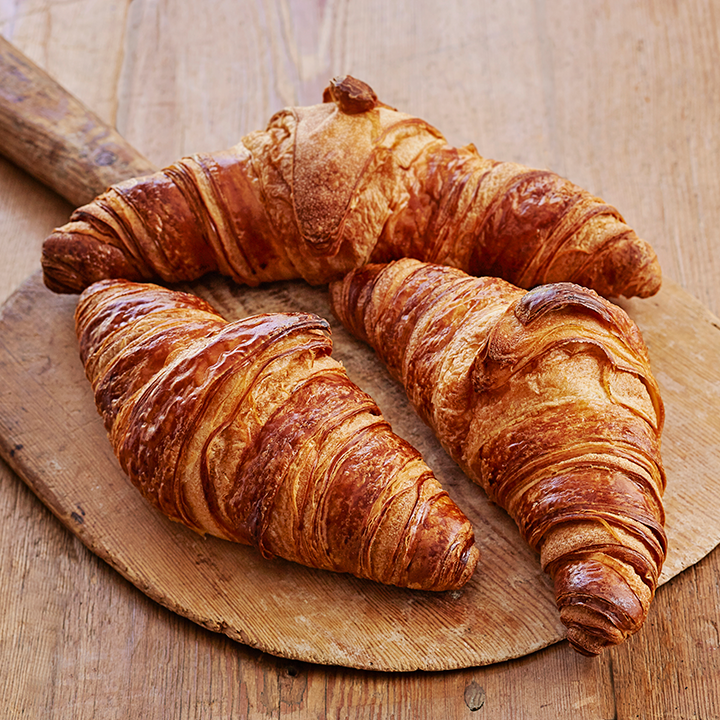
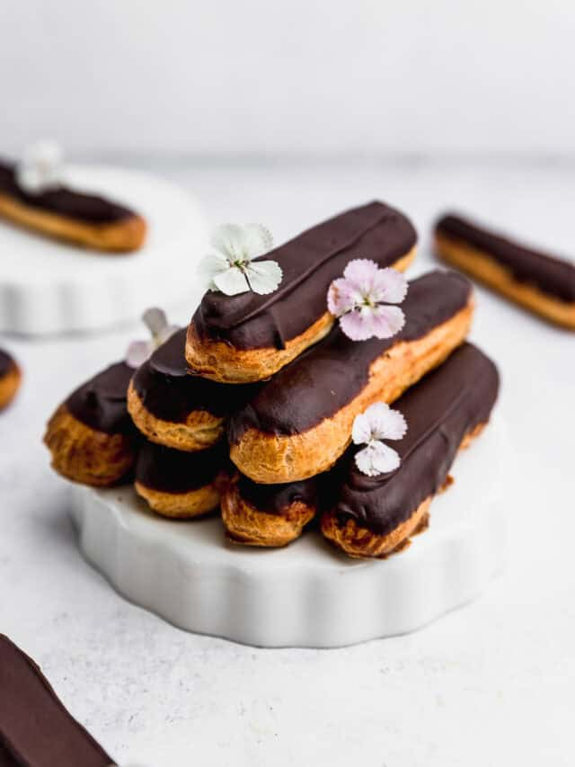
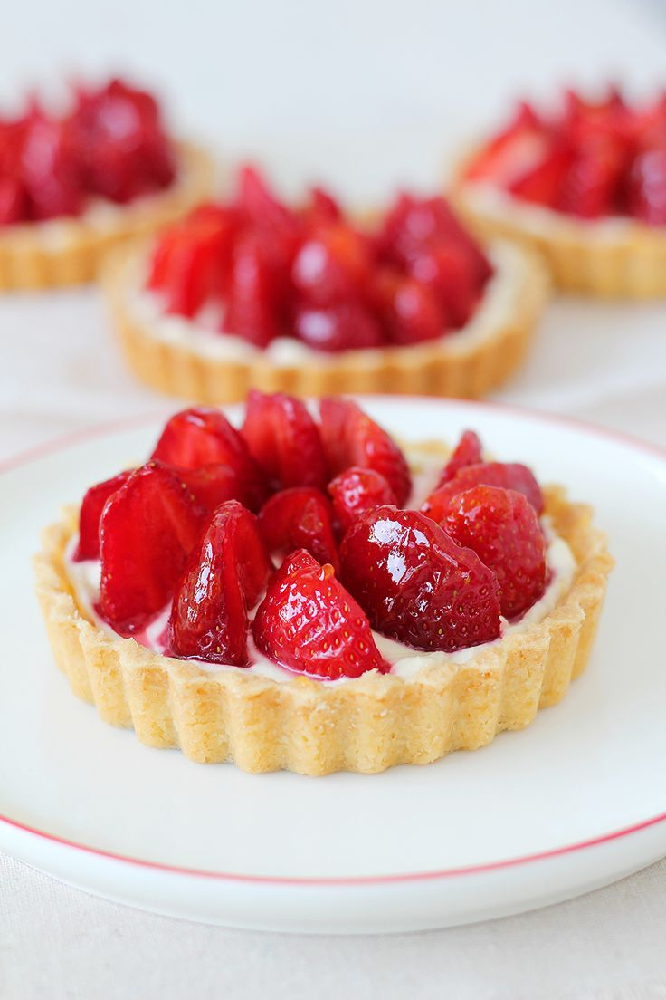
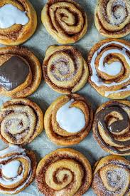
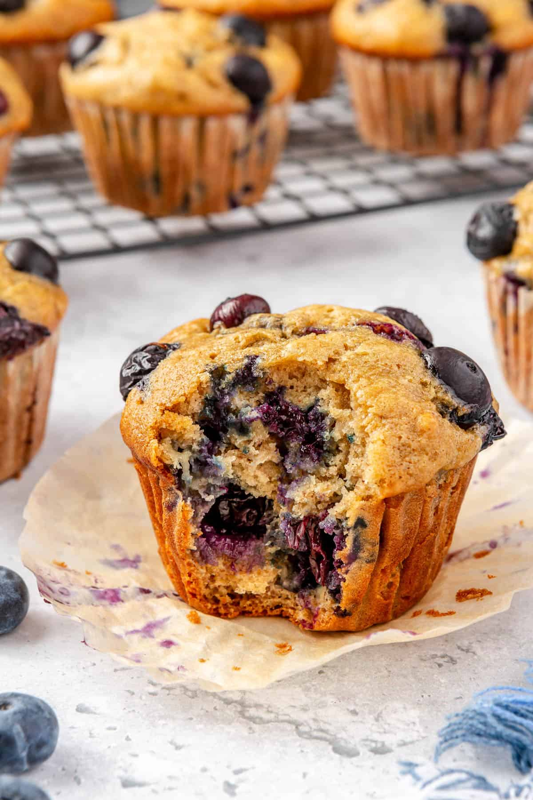
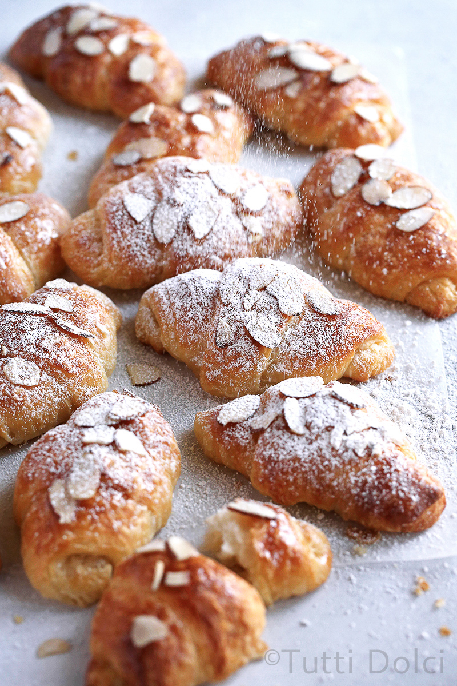
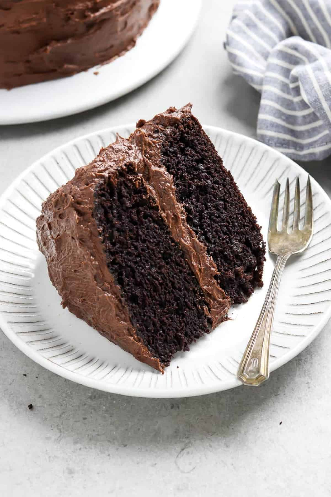
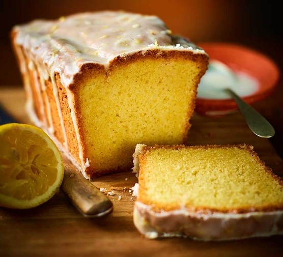

Fresh Bakes

Fresh Bakes is a neighborhood bakery that blends classic comfort foods with modern flavor experimentation. The bakery offers artisan breads, specialty pastries, seasonal treats, and custom cakes, all produced in small batches with local ingredients. Fresh Bakes values transparency about allergens, freshness, and options for various dietary needs, including gluten-free, vegan, and nut-aware products.

A classic French-style pastry made with layers of delicate, flaky dough and rich butter, baked until golden and crisp on the outside. Inside, the croissant is soft, airy, and slightly chewy, giving a perfect balance of texture in every bite. It has a light buttery aroma and a subtle sweetness that makes it ideal for breakfast or a quick snack. This pastry pairs well with coffee or tea and is one of the most popular choices for customers who enjoy simple but high-quality baked goods.

This elegant pastry is made from light choux dough filled with smooth and creamy vanilla custard, then topped with a glossy layer of rich chocolate glaze. The outer shell is slightly crisp while the inside remains soft and airy, creating a satisfying contrast. The filling is sweet but not overwhelming, and the chocolate topping adds a deep, indulgent flavor. It is a perfect dessert for chocolate lovers who want something refined and delicious

A beautifully crafted tart with a crisp, buttery crust filled with smooth vanilla pastry cream and topped with fresh, juicy strawberries. The strawberries are carefully arranged and lightly glazed to enhance their natural sweetness and shine. Each bite offers a mix of textures—from the crunchy base to the creamy filling and soft fruit on top. This dessert is refreshing, slightly sweet, and perfect for those who enjoy fruity flavors.

A soft and fluffy rolled pastry filled with a rich mixture of cinnamon, sugar, and butter, baked until warm and golden. It is topped with a smooth cream cheese glaze that melts slightly into the layers, adding extra sweetness and richness. The cinnamon filling creates a warm and comforting flavor that is perfect for mornings or cozy afternoons. This pastry is a favorite for customers looking for something sweet, soft, and satisfying.

A moist and tender muffin filled with fresh blueberries that burst with flavor in every bite. The top is slightly crisp and golden, often sprinkled with a light sugar coating for extra texture. The inside is soft and fluffy, with a balanced sweetness that is not too strong. This muffin is a great option for breakfast or a quick snack and is especially popular among customers who enjoy fresh fruit in their baked goods.

A rich variation of the classic croissant, filled with a smooth almond cream and topped with sliced almonds and powdered sugar. The pastry is baked until slightly crisp on the outside while staying soft and flavorful inside. The almond filling adds a nutty, slightly sweet taste that complements the buttery layers perfectly. This pastry is ideal for those who want something more indulgent and unique.

A soft and moist chocolate cake made without any animal products, using high-quality plant-based ingredients. Despite being vegan, it has a deep chocolate flavor and a rich, smooth texture that rivals traditional cakes. It is layered with a creamy chocolate frosting that adds sweetness without being too heavy. This dessert is perfect for customers with dietary preferences while still offering a delicious and satisfying experience.

A light and fluffy cake infused with fresh lemon flavor and topped with a sweet and tangy glaze. The citrus taste gives it a refreshing quality that is perfect for warmer days or as a light dessert. The glaze slightly soaks into the cake, adding extra moisture and enhancing the flavor. This pastry is ideal for customers who prefer something less heavy but still flavorful and enjoyable.